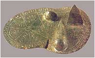
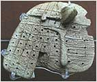

|
Do przeprowadzenia swoich poszukiwañ muszê jednak za³o¿yæ pewne tezy, które
uznajê za podstawowe. Oto one:
•
Platon opisa³ prawdê i jego opisy nale¿y braæ dos³ownie. Odnajdywanie Atlantydy
w ró¿nych czê¶ciach ¶wiata uwa¿am za przejawy naci±gania faktów, wybiórcze
traktowanie tekstu i szukania "5 minut" popularno¶ci.
•
Ziemia w przesz³o¶ci by³a aren± ogólno¶wiatowych kataklizmów,
które Hapgood nazwa³ "wielkim uskokiem skorupy ziemskiej".
•
Twierdzenie, ¿e Bogów wymy¶li³ cz³owiek na w³asne potrzeby
jest bezsensowne. Wynika³o by z tego, ¿e cz³owiek pierwotny my¶la³ bardziej abstrakcyjnie
ni¿ jego dzisiejsze "uczone" potomstwo.
•
Gigantyczne budowle nie s± dzie³em cz³owieka.
Nawet wspó³czesna cywilizacja, maj±c do dyspozycji najnowocze¶niejsze ¶rodki techniczne,
mia³aby ogromne trudno¶ci ze zbudowaniem samej tylko atrapy, tak jak to by³o z ma³ym,
kilkumetrowym modelem piramidki w Giza.
Chcê siê skupiæ na dowodach i poszlakach nam najbli¿szych, a wiêc z terenu Europy,
Bliskiego Wschodu i Afryki pó³nocnej. Czasem wynikaj± z tego naprawdê zaskakuj±ce
wnioski.
Mówi±c o Atlantydzie, stolicy Posejdona nale¿y uzmys³owiæ sobie, ¿e mówimy o
architekturze wielkich kamieni podobnych do tych z Myken i Tirynsu, a wiêc o
epoce istniej±cej na d³ugo przed klasycznymi Grekami. Epoce rozpoczêtej w wieku
Bogów i pó³bogów, w którym Zeus usilnie pracowa³ nad uszlachetnianiem ludzkiego
rodzaju p³odz±c na prawo i lewo Pó³bogów-Herosów. Takim by³ miêdzy innymi Herakles,
który ustawi³ s³upy na zachodniej granicy ówczesnego ¶wiata lub jak kto woli na
wschodzie Atlantydy. Wspó³cze¶ni Grecy uznali, ¿e S³upami Heraklesa s± ska³y
cie¶niny gibraltarskiej prawdopodobnie dlatego, ¿e za nimi na zachód nie znale¼li
ju¿ nic, wszystko zosta³o zalane. Jednak wed³ug mitologii greckiej, Herakles
ustawi³ s³upy na wyspie Erytei po³o¿onej na zachodnich krañcach ¶wiata, gdzie
mia³ wykonaæ swoj± dziesi±t± pracê - zdobycie trzód olbrzyma Geriona. Na wyspê
dop³yn±³ w z³otej czarze boga Heliosa. Byæ mo¿e chodzi o jak±¶ nieistniej±c± ju¿
wyspê, zalan± wodami Morza ¦ródziemnego, na której znajdowa³y siê kamienne kolumny
zwane S³upami Heraklesa i byæ mo¿e ta wyspa le¿a³a w pobli¿u cie¶niny Gibraltarskiej.
Kolumny, wykonane i ustawione przez herosa, bardziej pasuj± do stwierdzenia "S³upy
Heraklesa" ni¿ dwie nagie ska³y cie¶niny Gibraltarskiej. Morze ¦ródziemne przed
"Wielkim uskokiem..." te¿ wygl±da³o zapewne zupe³nie inaczej. Platon opisuje je -
"Ca³e to morze,
które siê znajduje z tej strony cie¶niny, o której mowa, wygl±da na port o w±skim
wje¼dzie". St±d te¿ zapewne k³opoty tych wszystkich, którzy odnale¼æ chc± na
dzisiejszym morzu ¦ródziemnym, trasê podró¿y Odyseusza spod Troi do Itaki.
Czy istnia³a Atlantyda? Wed³ug mnie
istnia³a. Zosta³a poch³oniêta przez wody Atlantyku, które w wyniku "wielkiego uskoku..."
zakry³y j± kilkukilometrow± warstw±. Nale¿y jej szukaæ tam, gdzie wskaza³ Platon -
na Atlantyku, na przeciwko s³upów Heraklesa, miêdzy Gibraltarem a Ameryk± Pó³nocn±
pod kilkukilometrow± warstw± wody.
Wytypowaæ mo¿na obszar, który spoczywa na g³êboko¶ci oko³o 2-3 km pod wod±. Nie
nale¿y siê natomiast spodziewaæ wielkich dzie³ sztuki, czy monumentalnych budowli.
Je¶li Atlantydê zmiot³y masy wody to nic nie znajdziemy, a je¶li co¶ w ogóle znajdziemy mo¿emy
mówiæ o wielkim szczê¶ciu. Mo¿emy natomiast odkryæ zarysy wyspy i s³ynne koliste
kana³y oraz porównaæ ukszta³towanie terenu z opisem Platona. Byæ mo¿e peryferiami
cywilizacji Atlantów jest s³ynna ju¿ Bimini Road. Je¿eli odnajdziemy resztki
stolicy Posejdona, to prawdopodobnie odnajdziemy budowle kamienne "typu" Mykeny,
Tiryns czy Machu Picchu lub Oltantaytambo. Takie potê¿ne, cyklopowe budowle
wznoszone przez Bogów królowa³y tam od samego pocz±tku.
 |
|
Atlantyk pó³nocny miêdzy Euroafryk± i Ameryk± pó³nocn± |
Atlantydy szukano wszêdzie. Od Meksyku po Syberiê. Przyczyn zag³ady dopatrywano
siê od uderzenia planetoidy po wielkie p³ywy wody spowodowane przez Ksiê¿yc, lecz
ka¿da z teorii mia³a jaki¶ mankament, co j± czyni³o nie do przyjêcia. Wszystkie
natomiast zak³ada³y, ¿e Ziemia, a w zasadzie jej skorupa, ca³y czas trwa³a i trwa
niezmiennie w swych posadach. Spójrzmy, gdzie ju¿ umiejscawiano Atlantydê:
• Girolamo Fracastoro (1530) - Meksyk,
• Athanasius Kircher (XVII w.) - w trójk±cie w. Zielonego Przyl±dka, Azory, w. Kanaryjskie,
• Olaus Rudbeck - Skandynawia, Uppsala,
• Robert Vaugoudy - Brazylia,
• J. S. Bailly - Spitsbergen,
• Buffon - w. Wniebowst±pienia i w. ¦w. Heleny,
• Cadet - wyspy pó³nocnego Atlantyku,
• A. Norow - m. ¦ródziemne, miêdzy Sycyli± i Cyprem,
• A. Karno¿ycki - wyspy morza Egejskiego,
• Ignatius Donelly - ¶rodkowy Atlantyk,
• K. T. Frost, Bayley - Kreta,
• Leo Frobenius - zatoka Gwinejska,
• Fessenden - Kaukaz,
• Fosset - d¿ungla Amazonki,
• B. Bogajewski - pó³nocna Afryka,
• P. Borchardt - Tunezja,
• A. Schulten - p³w. Pirenejski,
• Nikola Russo - na m. Tyrreñskim,
• J. Spanuth - Helgoland,
• A. Galanopoulos - Kreta,
• N. ¯yrow - ¶rodkowy Atlantyk.
|
W pewnym sensie przyzna³bym wszystkim racjê. Atlantyda to nie tylko zatopiona wyspa
na Atlantyku wraz ze stolic± Posejdona. Atlantyda to tak¿e jej kolonie, jej styl i
technika budowy, jej kultura i sztuka rozrzucone po ca³ym obszarze jej oddzia³ywania.
Nie dziwi± mnie zatem "rzymskie" ³uki w dalekiej Azji, Afryce czy Ameryce ¦rodkowej.
Jak wielki obszar zajmowa³a sama Atlantyda i jej kolonie nie wiemy. Byæ mo¿e
wiêkszo¶æ tych lokalizacji trafia w granice obszaru tego przed potopowego
pañstwa. Przyjmuj±c, ¿e 12,5 tysi±ca lat temu mia³ miejsce ogólno¶wiatowy
kataklizm w postaci "wielkiego uskoku skorupy ziemskiej" mo¿na przyj±æ nastêpuj±cy
scenariusz zag³ady Atlantydy: nagromadzona warstwa lodu na ówczesnym biegunie
pó³nocnym powoduje gwa³towne przesuniêcie siê ca³ej skorupy ziemskiej wzd³u¿ 70°
po³udnika zachodniego i w ci±gu 1-3 dni przemieszcza siê o 3000 km w kierunku
po³udniowym.
Co siê wówczas dzia³o? Masy wody oceanu Atlantyckiego si³± bezw³adno¶ci ruszaj± w
kierunku równika i bieguna po³udniowego, by po jakim¶ czasie ze zdwojon± si³± ruszyæ
z powrotem na pó³noc. By³o to tsunami o wysoko¶ci kilku kilometrów mia¿d¿±ce
wszystko na swojej drodze. To samo dzia³o siê ze wszystkimi oceanami, morzami,
jeziorami i rzekami na ca³ym ¶wiecie. Wybrze¿a kontynentów zosta³y sp³ukane do
morza wraz ze wszystkim co na nich by³o. Nie wiadomo, czy woda nie dosiêg³a
tak¿e najwy¿szych partii gór. Wybrze¿a Ameryki Pó³nocnej, wyspy na Atlantyku
powy¿ej dzisiejszego zwrotnika Raka, szelf europejski, wszystko to znalaz³o
siê pod wod±. Ju¿ na sta³e. Do dzi¶ przecie¿ odnajduje siê ¶lady dróg
prowadz±cych wprost do oceanu, czy zagadkowe budowle znajduj±ce siê pod wod±.
Dzisiejsza technika zrobi³a olbrzymi krok do przodu. Dlaczego wiêc nie przeprowadzi
siê podwodnych poszukiwañ w rejonie Bermudów czy wysp Azorskich? Nawet w atlasie
szkolnym widaæ w tym miejscach pod wod± istniej±ce wyniesienia dna, bêd±ce na
g³êboko¶ci 2-3 km. Opuszczenie sonaru i zeskanowanie dna w tym miejscu mog³oby
ukazaæ ukszta³towanie terenu dna, a byæ mo¿e nawet zarysy kompleksów budowlanych
(regularno¶æ kszta³tów), a ju¿ na pewno pe³niê szczê¶cia da³oby odkrycie czego¶
zbli¿onego do wspó³¶rodkowych krêgów, które znajdowa³y siê w stolicy Atlantydy.
Po takich przygotowaniach mo¿na by by³o zorganizowaæ ju¿ konkretn± ekspedycjê
poszukiwawcz±. Podwodne roboty z ³atwo¶ci± dostarczy³yby konkretnych dowodów.
Odejd¼my na chwilê od tematu. Jest na ziemi taki twór sk³adaj±cy siê ze
wspó³¶rodkowych krêgów. Nie wiadomo, co to mo¿e byæ, a tym bardziej co lub
kto móg³ co¶ takiego wytworzyæ. Nazywa siê "struktur± Richat" i znajduje siê
w Mauretanii w Afryce zachodniej. Jak wygl±da?
Naukowcy nazywaj± to kraterem, choæ nie wiem z jakiego powodu. Krater wulkaniczny
wygl±da trochê inaczej, podobnie jak krater meteorytowy i ¿aden z nich nie przypomina
spirali jak Richat. Ca³o¶æ ma 50 km ¶rednicy i jest umieszczona w g³êbokiej
szczelinie. Je¶li nie jest to twór natury, to kto by³ w stanie wykonaæ co¶
takiego, po co i kiedy? Czy to przypadek, ¿e rekonstrukcja portu w Kartaginie
ukazuje nam okr±g³± budowlê w samym porcie, co¶ w rodzaju mini Atlantydy?
Chyba nie, bo przecie¿ zgodnie z moj± hipotez± Kartagina by³a jej koloni±.
Spróbujmy teraz wy³uskaæ z Platona wiadomo¶ci na temat warunków geograficzno-fizycznych
wyspy.
| |
Platon (Timajos) - Potêga owa posiada³a wyspê przed cie¶nin±, która siê nazywa³a u was
Kolumnami Heraklesa. Wyspa ta by³a wiêksza od Libii i Azji razem wziêtych. Podró¿ni
owych czasów mogli siê dostawaæ z tej wyspy na wyspy inne, a z nich na ca³y kontynent
przeciwleg³y, który siê rozci±ga³ doko³a tego prawdziwego morza. Ca³e to morze, które
siê znajduje z tej strony cie¶niny, o której mowa, wygl±da na port o w±skim wje¼dzie.
A co jest po tamtej jej stronie, mo¿na by nazwaæ prawdziwym morzem, a ziemi, która je
zewsz±d otacza, mo¿na by daæ, w ¶cis³ym tego s³owa znaczeniu, miano kontynentu.
Na tej wyspie Atlantydzie kwit³a wielka i zdumiewaj±ca potêga królewska, której
podlega³a ca³a wyspa oraz wiele innych wysp i czê¶ci kontynentu. Ponadto z tej
strony cie¶niny królestwo to obejmowa³o okolice Libii a¿ do Egiptu i Europê a¿
po Tyrreniê.
|
| |
Platon (Kritias) - Blisko morza i przez ¶rodek ca³ej wyspy le¿a³a równina, która mia³a byæ
najpiêkniejsza ze wszystkich równin, o niezwyk³ej urodzajno¶ci. W pobli¿u za¶
równiny wznosi³o siê niewysokie wzgórze, w odleg³o¶ci mniej wiêcej piêædziesiêciu
stadiów (900 m) od jej ¶rodka.
W obfito¶ci by³a woda, zarówno zimna jak gor±ca. Ka¿dy z tych gatunków wody nadawa³
siê znakomicie do u¿ytku dziêki swej ³agodno¶ci i zaletom. Wyzyskiwa³y je specjalne
konstrukcje i plantacje odpowiadaj±ce naturze wód. Umie¶cili doko³a baseny, jedne
otwarte, drugie kryte, przeznaczone do ciep³ych k±pieli w okresie zimowym.
Po pierwsze, ca³a okolica by³a po³o¿ona bardzo wysoko i spadzisto schodzi³a ku morzu.
Jednak teren, na którym le¿a³o miasto, by³ p³aski. Równina ta otacza³a miasto, bêd±c
sama otoczona górami, które siêga³y a¿ do morza. By³a p³aska, równa, ca³a wyd³u¿ona.
Liczy³a po bokach trzy tysi±ce stadiów (540 km) oraz dwa tysi±ce stadiów (360 km) w
¶rodku od morza, które znajdowa³o siê w dole.
Ta okolica w ca³ej wyspie by³a pochylona ku po³udniowi, os³oniêta przed wiatrami
pó³nocnymi. Chwalono góry, które j± otacza³y: pod wzglêdem ilo¶ci, wielko¶ci i
piêkna przewy¿sza³y one te wszystkie, które istniej± obecnie. W górach tych by³o
wiele wsi bogatych w mieszkañców, jak równie¿ wiele rzek, jezior, ³±k zdolnych
wy¿ywiæ olbrzymi± ilo¶æ zwierz±t dzikich i oswojonych, oraz tak¿e mnóstwo lasów
o tak ró¿nej naturze, i¿ dostarcza³y w obfito¶ci materia³u niezbêdnego do
wszelkich mo¿liwych prac.
Równina ta, zarówno z natury jak i dziêki pracy w³o¿onej przez królów w ci±gu
d³ugiego okresu czasu, mia³a nastêpuj±cy wygl±d: tworzy³a - jak powiedzia³em -
po wiêkszej czê¶ci prostok±tny, pod³u¿ny czworobok; tam, gdzie boki odchyla³y
siê od linii prostej, poprawiono tê nieregularno¶æ wykopuj±c ci±g³y rów, opasuj±cy
równinê.
|
Wzglêdnie dobrze do tych opisów pasuje rejon Grzbietu Atlantyckiego w rejonie
Azorów, który zaznaczy³em na mapce. Czy tak wygl±da³a Atlantyda? Na pewno nie,
i tego jak wygl±da³a nie wie nikt. By "wynurzyæ" wyspê nale¿a³o by wykonaæ
ogromn± pracê kartograficzno-obliczeniow± dla wspó³rzêdnych geograficznych
odpowiadaj±cych biegunowi w okolicy Akpatok.
Uzasadniaj±c po³o¿enie Atlantydy zacznê od przypomnienia, ¿e sprawê zaginionego
l±du rozpatrujê z punktu hipotezy Hapgood'a. Wyspa widnia³a na powierzchni oceanu
w czasach, gdy biegun pó³nocny znajdowa³ siê w okolicach wyspy Akpatok, wiêc w
odleg³o¶ci oko³o 3400 km od niego. Mniej wiêcej w takiej odleg³o¶ci le¿± dzi¶
Niemcy czy pó³nocna Francja. Wynika z tego, ¿e le¿a³a w klimacie umiarkowanym,
co zreszt± potwierdza Platon pisz±c o basenach wykorzystywanych w okresie zimowym.
Wielko¶ci samej wyspy nie okre¶lono. Ograniczono siê tylko do porównania jej z
Libi± i Azj±. Z tego porównania trudno wysnuæ jakikolwiek wniosek. Nie znamy
obszaru Libii w rozumieniu Egipcjan, jak równie¿ nie wiemy jak wielki obszar
kry³ siê pod nazw± Azji. Wiemy natomiast, ¿e równina mia³a kszta³t nieregularnego
prostok±ta o d³ugo¶ci boków oko³o 540 km.
Najwa¿niejsz± rzecz±, któr± musimy sobie uprzytomniæ to ta, ¿e przed
"wielkim uskokiem..." wyspa po³o¿ona by³a wy¿ej o prawie 5 km i jej góry
mog³y siêgaæ wysoko¶ci 2 km lub wiêkszej. Obliczy³em, ¿e w miejscu dzisiejszych
Azorów do ¶rodka Ziemi jest oko³o 6369,4 km (promieñ geoidy) przy odleg³o¶ci od
dzisiejszego bieguna oko³o 4680 km. W tym samym miejscu (ca³y czas mowa o Azorach)
przed "wielkim uskokiem..." by³o oko³o 6364,5 km i do ówczesnego bieguna oko³o
3360 km, a to daje ró¿nicê 4,9 km wysoko¶ci.
Zaznaczona przeze mnie hipotetyczna wyspa mo¿e odpowiadaæ Atlantydzie. Wielk±
równinê od pó³nocy ochrania³ ³añcuch górski (na mapce czarna przerywana linia),
stanowi±cy czê¶æ dzisiejszego Grzbietu Atlantyckiego. Opisywane gor±ce ¼ród³a na
wyspie mo¿na t³umaczyæ blisk± dzia³alno¶ci± wulkaniczn± rowu atlantyckiego,
aktywnego zreszt± do dzisiaj. Platon wspomina tak¿e o wydobywaniu trzech rodzajów
kamienia - bia³ego, czarnego i czerwonego. Czarnym kamieniem móg³ byæ zapewne
bazalt, co te¿ ¶wiadczy³oby o tworach wulkanicznych znajduj±cych siê na wyspie.
Przy odrobinie fantazji mo¿na tak¿e ujrzeæ wspominan± równinê okolon± zewsz±d
górami opadaj±c± w kierunku morza na po³udniu. Byæ mo¿e samo ukszta³towanie terenu
tworzy³o swoisty mikroklimat pozwalaj±cy na dwa zbiory w ci±gu roku. Dlaczego nie
wybra³em obszaru na pó³noc od Azorów? Z dwóch powodów. Szeroko¶æ istniej±cej tam
"równiny" od "gór" Azorskich do ³añcucha górskiego po³o¿onego na pó³noc od nich
mia³a by w przybli¿eniu szeroko¶æ Portugalii czyli oko³o 800 km, a wiêc d³u¿sza
od platoñskiej o prawie 300 km. Po drugie "równina" ta nie le¿y na przeciw S³upów
Heraklesa.
De Sousa (portugalski historyk z XVII w.) pisze, ¿e wkrótce po odkryciu Azorów
znaleziono na szczycie góry na wyspie Corvo - pos±g je¼d¼ca bez siod³a, z go³±
g³ow±; lew± rêk± g³adzi³ koñsk± grzywê, a praw± wskazywa³ na zachód. Pos±g sta³
na cokole z tego samego kamienia; u do³u wykute by³y litery, których nie uda³o
siê przeczytaæ.
Portugalczycy zniszczyli pomnik jako figurê pogañskiego bo¿ka. Ponoæ do dzisiaj
w¶ród miejscowej ludno¶ci na Corvo znane jest podanie o dawnym pos±gu. Jak
wygl±da³o otoczenie wyspy nie wiemy. Platon pisze tylko o otoczeniu wielu
innych wysp. Wa¿nym stwierdzeniem jest te¿, ¿e królestwo to posiada³o tak¿e
w³o¶ci na naszym kontynencie po Tyrreniê we W³oszech oraz w Afryce s±siadowa³o
z Egiptem. Tyrrenami Grecy nazywali Etrusków, których pochodzenie do dzi¶ nie
jest znane, podobnie jak Basków czy Guanczów z wysp Kanaryjskich. Etrusków
historia umieszcza na terytorium po³o¿onym w okolicach dzisiejszego Rzymu
(w jêzyku Etrusków - Ruma) i na pó³noc od niego. Pozosta³y po nich tylko
grobowce i trochê dzie³ sztuki przypominaj±ce sztukê najdawniejszych Achajów.
Znali obróbkê metali. Najbardziej znane dzie³a sztuki wykonane z br±zu to
"chimera", "w±troba do wró¿enia" i "wilczyca kapitoliñska". Takich dzie³ sztuki
nie wykona nie cywilizowany naród. Czy mieli do czynienia z technologi± Atlantydy?
 |
 |
Czy chimera nie ¶wiadczy o tym, ¿e Etruskom znane by³y hybrydy? Artefakt obok
okre¶lany jest jako "w±troba do wró¿enia". Czy znalezisko z Mezopotamii (bodaj
przypisywane Sumerom), które pokazujê obok, nie przypomina tej etruskiej "w±troby"?
Czy dalej mo¿na wierzyæ, ¿e to jest w±troba do wró¿enia? Przecie¿ w Sumerze nie
wró¿ono z organów! Czy kto¶ dokona³ porównania tych znalezisk? W±tpiê. Na koniec
mo¿na jeszcze napomkn±æ, ¿e dwie postacie, które karmi wilczyca s± wynikiem
dzia³alno¶ci politycznej pó¼niejszych Rzymian, którzy "dorobili" dzieci wilczycy,
by usankcjonowaæ "staro¿ytno¶æ" Rzymu.
|